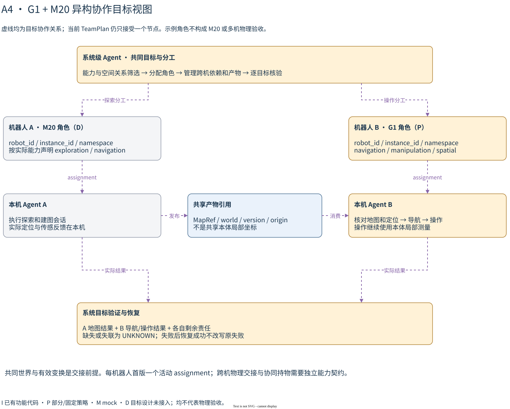

SystemApp（src/system_app/）位于平台编排与演化平面，承担将人类操作员高层意图转化为多机可执行任务拓扑、仲裁共享通道资源，以及在安全离线边界内持续改进策略规则的核心职责。它不参与毫秒级关节控制，却确保整个异构编队在语义正确性与物理可到达性之间保持一致。

动态能力规划器（DynamicCapabilityPlanner）
位于
src/system_app/modules/team_planner/domain/compilation/dynamic_capability_planner.py
的 DynamicCapabilityPlanner
不依赖写死的脚本路线，而是为每次编译请求动态组装上下文快照
DynamicPlanningContext：
- 三源上下文聚合：实时汇总场景静态知识包（
KnowledgePackContext）、基于 SQLite/FTS5 的分域记忆检索（spatial_annotation、procedure、episode、knowledge四张知识表）、各机器人在线技能目录就绪状态（CapabilityContract）以及FacilityHAL设备实时状态（FacilityDeviceState）。 - 三类编译结果分流：面对缺参、歧义或目标不可达情形，明确输出
NEEDS_CLARIFICATION反问操作员而禁止盲目猜测；针对单一常规作业输出MACRO_SKILL_PLAN；针对跨工位或跨机协作输出带依赖边的COMPOSITE_DAG_PLAN。 - 跨机替补与共享资源互斥注入：当首选机器人能力下降或离线时，调用
resolve_agent_fallback依据EmbodimentSpec同级能力筛选备选载体；在生成拓扑前通过_inject_resource_intervals为狭窄通道、停机泊位自动插入互斥锁窗口（如factory.ch_corridor或c919.dock.cargo_fwd）。 - 持股守恒校验（
_verify_holding_conservation）：在编译阶段即校验所有搬运与交接任务的holding_context_ref，确保同一工件在空间转运过程中不会在无交接节点的情况下被逻辑复制或凭空丢失。
多机运行时与舰队总线（TeamRuntime
& StarFleetBus）

编译通过的 DAG 交由
src/system_app/modules/team_runtime/runtime.py
调度推进：
- 异构节点统一派发：
TeamRuntime区分处理RobotAssignmentNode（通过 ROS 2/system/execute_assignment或 HTTP 舰队总线派发给单机）与EquipmentAssignmentNode（经equipment_runtime分派至:18642FacilityHAL网关）。 - 舰队互斥锁仲裁（
StarFleetBus）：运行于:18641的StarFleetBusState内建ResourceTokenMutexRegistry，通过/api/fleet/resources/{id}/{acquire,release}与/api/fleet/corridor/*接口严格仲裁多机对充电走廊、工位过道及机场泊位的独占访问，防止通道相向死锁。 - 执行回执核对与超时清理：
ExecutionResults监听器核对回执事件中的assignment_id、run_id、capability_id与节点绑定instance_id；若上游机器人实例发生重建更换，旧实例残留回执将被强制拒绝。
严格来源与结果验证器（TeamVerifier）
位于
src/system_app/modules/team_verifier/domain/predicates.py
的断言引擎在每个任务步骤或任务节点终结时返回
SATISFIED、UNSATISFIED 或
UNKNOWN：
- 来源一致性硬门禁：严格比对任务执行回执来源（
origin）与外部观测证明来源（例如同属SIM_SAL或同属REAL_HAL），严禁将仿真渲染位姿或设计图假数据伪造为真实感知证据。 - 空间地图与多臂归属核验：同步检查
spatial_runtime报告的地图参考系归属、selected_arms实际启用臂标识、holding_context_ref持物引用以及remaining_responsibility交接责任剩余量，避免出现操作成功假象。
受约束的离线自我反思与演化（ReflectionEngine
& EvolutionManager）

FACRI
将自我改进机制（RSI）严格限定在离线受约束实验与编译上下文规则层（对应前端
P07 RsiLab 与 /api/rsi/*
路由），遵循以下三项安全铁律：
- 只读分析真实失败证据：
ReflectionEngine消费EvidenceStore留存的历史失败数据包，例如在工厂robot_r4V0试验中因接料前置条件未覆写而触发的RECEIVER_CONDITION_UNHANDLED错误实录，结合结构化日志提炼失效上下文，而不隐藏或删改原始失败计数。 - 候选生成与对照验证分离：
EvolutionManager（src/system_app/modules/evolution_manager/）针对分析出的短板在隔离目录产出规则或能力补丁候选（如补齐接收端检测与位姿容差策略），并触发受控批量对照仿真测试；只有通过全部门禁对比（例如robot_r4V1全流程稳定通过），候选补丁才获得人类工程师审查采纳或版本回滚选项。 - 严禁在线绕行修改运行基线：任何离线反思与演化流程均不具备热更修改在线机器人控制器、绕过
check_factory_runtime_baseline.py校验或改动实时保护阈值的权限。